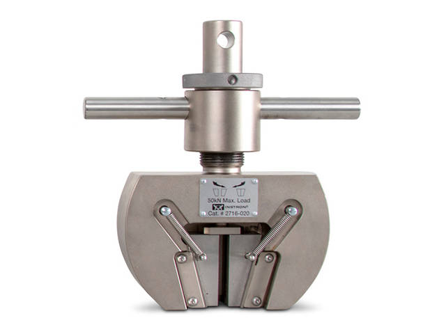
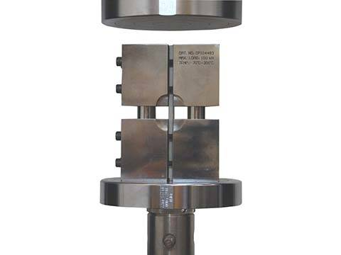
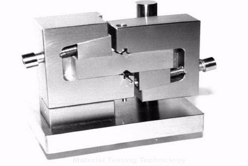
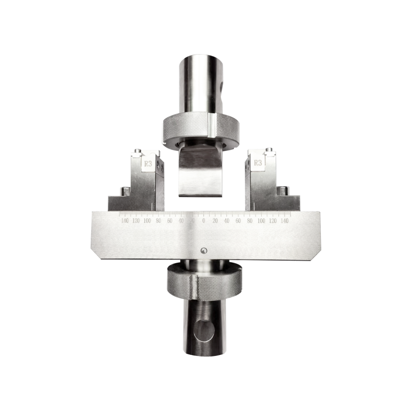
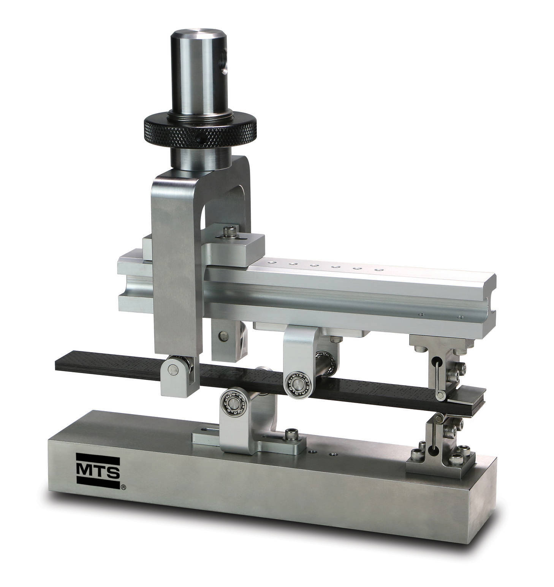
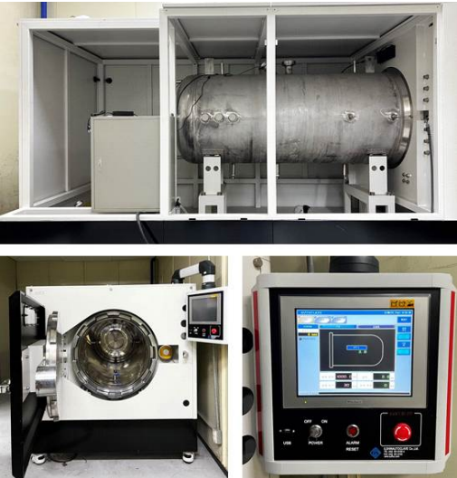
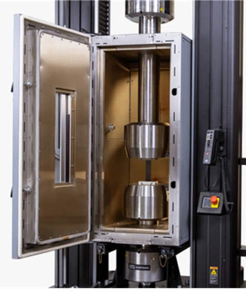

Equipment & Fixtures
장비·시험 치구
시험 항목별 시험 치구와 환경시험 장비를 연결하여 사용 시험, 적용 범위, 시편 장착 조건을 함께 안내합니다.

Fixture Library
시험 항목별 장비 및 시험 치구
시험 항목별 장비와 시험 치구를 정리했습니다. 세부 조건은 시편 형상, 시험 온도, 장비 조건을 확인한 뒤 협의합니다.


전단시험용 시험 치구
- 사용 시험
- 면내전단, 층간전단, 접착부 전단
- 적용 범위
- 규격 및 시편 형상 협의
- 비고
- 세부 사양은 시편 형상, 장비 조건, 고객 요구 조건에 따라 협의합니다.


Mixed-mode 시험 치구
- 사용 시험
- Mixed-mode 층간파괴인성 시험
- 적용 범위
- Mode ratio 협의
- 비고
- 세부 사양은 시편 형상, 장비 조건, 고객 요구 조건에 따라 협의합니다.

환경시험 장비
- 사용 시험
- 저온·고온 환경 조건 기계시험
- 적용 범위
- -150℃ ~ 1600℃ 범위 내 시험 항목별 조건 협의
- 비고
- 시험 시간, 목표 온도, 시편 형상, 환경 조건은 사전 협의 후 확정합니다.

수압시험 장비
- 사용 시험
- 수압시험, 압력용기 내압 평가
- 적용 범위
- 설계압력 및 목표압력 협의
- 비고
- 세부 사양은 용기 형상, 압력 조건, 체결 조건, 고객 요구 조건에 따라 협의합니다.

고온 시험용 전기로 및 고온 치구
- 사용 시험
- 고온·초고온 인장/압축/굽힘 등 기계시험
- 적용 범위
- 상온부터 최대 1600℃ 범위 내에서 시험 항목별 조건 협의
- 비고
- 온도, 분위기, 유지 시간, 치구 재질, 시편 형상은 사전 협의 후 확정합니다.